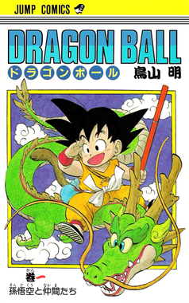
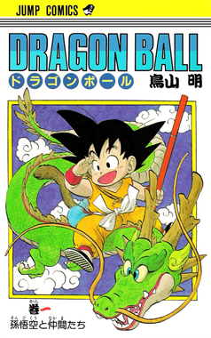

Je suis ravi de vous présenter mon site web entièrement conçu en HTML, dédié à la synopsis de mes animes préférés.
Ce site est un hommage à l'art de l'animation japonaise, une forme d'art qui a captivé des millions de personnes à travers le monde avec ses histoires captivantes, ses personnages mémorables et son animation époustouflante. Sur ce site, vous trouverez des synopsis détaillés de mes animes préférés, des classiques intemporels aux nouvelles sorties passionnantes.
Chaque page de ce site est dédiée à un anime spécifique, offrant un aperçu de l'intrigue, des personnages et des thèmes de l'anime. J'ai également inclus des informations sur les créateurs de chaque anime, ainsi que des liens vers des ressources supplémentaires pour ceux qui souhaitent approfondir leur compréhension de l'anime. Ce site a été entièrement construit en HTML, ce qui témoigne de la puissance et de la flexibilité de ce langage de balisage. Bien qu'il soit simple en apparence, le HTML est incroyablement puissant et peut être utilisé pour créer des sites web complexes et fonctionnels.
J'espère que vous apprécierez de naviguer sur ce site autant que j'ai apprécié le créer. N'hésitez pas à me faire part de vos commentaires et suggestions. Après tout, l'apprentissage est un voyage, et je suis ravi de vous avoir avec moi pour cette aventure.
 

.jpg)